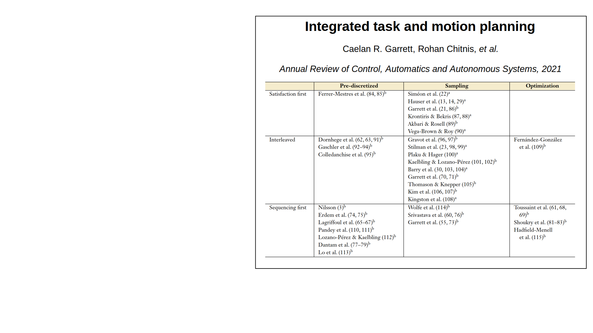
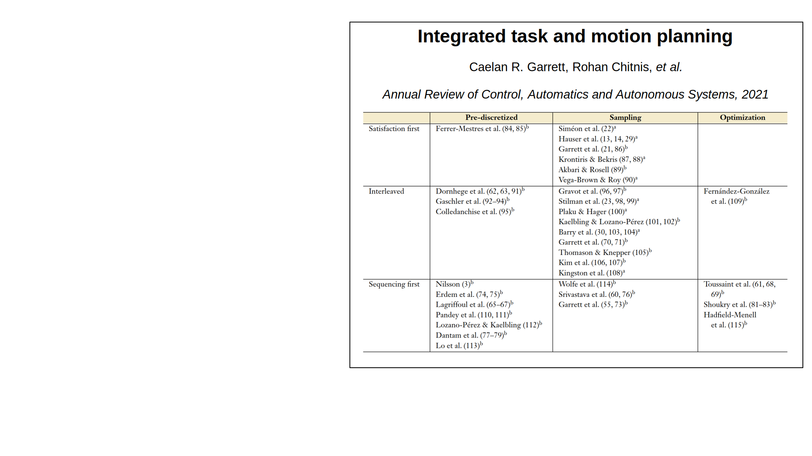

Ph.D. Dissertation
New Methods for Bridging Symbolic-Geometric Reasoning, Addressing Uncertainty and Action Learning in Task Planning for Robotics
Directed by
July 25th, 2024
Motivation


Objectives


Contributions


Planning and Execution
Dual-arm Symbolic-motion Planning


A. Suárez-Hernández, G. Alenyà, and C. Torras. "Interleaving hierarchical task planning and motion constraint testing for
dual-arm manipulation." In IROS 2018, pp. 4061–4066.
Addressed problems


Literature
 



Methodology


Planning in Face of Stochastic Outcomes
We are concerned with tasks...
- ... that require reasoning with action stochasticity (O2),
- where part of the state may be hidden (O3),
- and where classical algorithms are computationlly expensive
State represented as (P)PDDL objects and predicates:

Stochastic actions (MDP representation)


First principle: simplify task (subtask selection)

Second principle: determinization
Alpha-Cost Transition Likelihood determinization

Results

Leveraging Simulators to Minimize Risk
We are concerned with...
- ... leveraging two environments (learning and target) for safe execution and learning (O2,O4).
- ... disambiguate between similar actions with physical simulators (O1).


Proposed architecture


Multiple Environment Noisy Indeterministic Deictic (MENID) rules
Estimation of categorical distributions
- $ ^ix_i $: Number of times event $ j $ has occurred in environment $ i $
- $ N_i $: Total number of events
- If simulation (environment 2) reflects reality (environment 1) perfectly:$$ ^1p_j \approx \frac{^1x_j + ^2x_j}{N_1 + N_2} $$
- However, that isn't generally the case. We propose:$$^1p_j \approx \frac{^1x_j + \frac{m}{\sqrt{1+N_1}} ^2x_j}{N_1 + \frac{m}{\sqrt{1 + N_1}} N_2}$$
Algorithm overview
Video here
Influence of model resolution


time and accuracy


Learning Planning Operators